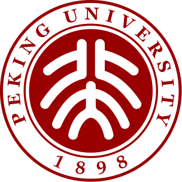

Xinan Wu (吴熙楠)
 |
Undergraduate student, |
Bio
I am currently an undergraduate student in the School of Physics at Peking University, and I'll receive my bachelor's degree from Peking University in July 2023. I have conducted research as a visiting scholar at Purdue University for half a year and also close to 5 months' online research work at Rice University.
Research Interests: nanomaterials science and technology, optoelectronic functional materials and devices, etc.
Hobbies: table tennis, singing, traveling.
Education Experiences
|  | Undergraduate Peking University (2019.09 ~ 2023.07)
|
Other Experiences
Visiting Scholar at Purdue University (2022.07-2022.12）
Online research at Rice University（2022.04-2022.9）
Undergrad research at Peking University（2021.03-2022.5）
Teaching assistant in Peijian Education Limited Company（2019/2020/2021.07-2019/2020/2021.08）
Publications
The first one is in preparation!
Patents
Not available now.